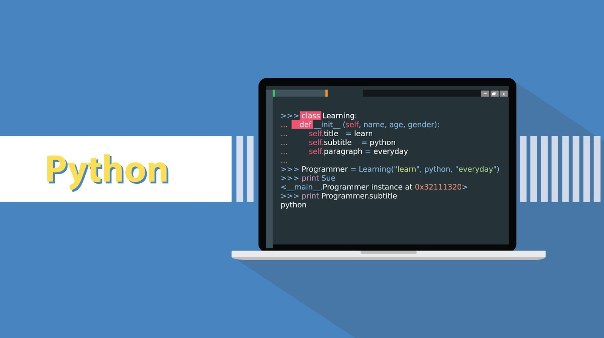
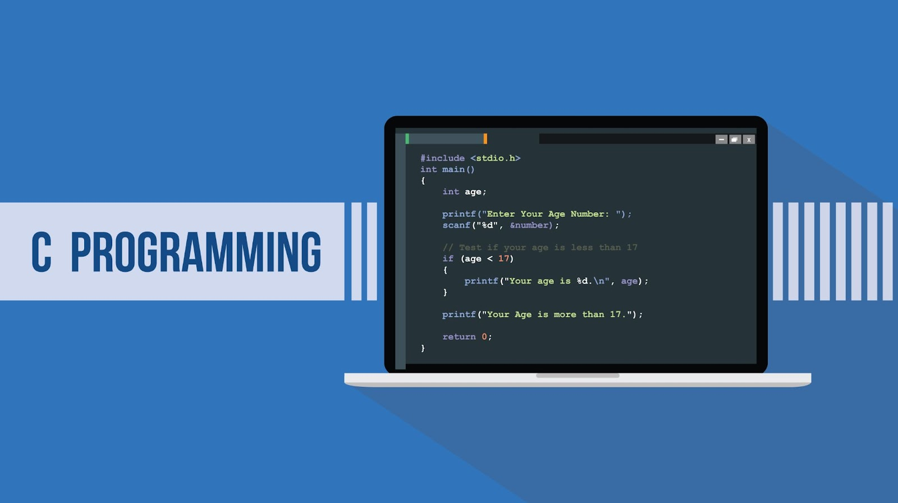

Vivemos em um mundo cada vez mais competitivo e as vagas de emprego estão cada vez mais
exigentes. Se
você quer assumir o controle do seu futuro, deveria começar a investir em sua educação agora mesmo!
Por isso, o aprimoramento é algo que precisa ser constante na carreira de um programador,
afinal, as linguagens de programação evoluem cada vez mais e o profissional da área precisa se manter
atualizado.
Uma área muito promissora e que certamente pode render frutos é a de desenvolvimento. O programador é um
profissional muito requisitado, embora também precise se qualificar para ser bom no que faz.
Video sobre materia Abordada
1 – PYTHON
Uma das linguagens que mais tem crescido e ganhado popularidade nos últimos anos é a nossa
primeira indicação. Python foi criado em 1991 como sendo uma linguagem de programação open source e
tem como um
dos maiores diferenciais a facilidade no aprendizado.
Em pouco tempo de estudo, você já estará familiarizado com a sintaxe e as principais funções da
tecnologia e, em pouco tempo, estará pronto para se candidatar a vagas que exigem esse conhecimento.
Além disso, Python é extremamente versátil, podendo ser usada em uma grande variedade de áreas e
para
resolver diversos problemas.
É uma das linguagens mais indicadas para aprender em 2021 e continuará sendo uma das mais usadas nos
próximos anos.
Ler Mais
2 – JAVA

Foi criada em 1995 na Sun Microsystems, sendo hoje a linguagem de programação mais usada dentro
do ambiente corporativo.
O destaque da linguagem é o foco dela na orientação a objetos, o que torna a
tecnologia
robusta e versátil.
As aplicações escritas em Java podem rodar em qualquer plataforma, bastando apenas que o sistema
tenha alguma implementação da Máquina Virtual Java (JVM) instalada.
Por conta de sua popularidade e aceitação no mercado, Java é uma das melhores linguagens
para aprender em 2021.
3 – C++ e C
Dividindo o posto com Java entre as linguagens de programação mais utilizadas no mundo, as
tecnologias C e C++ são geralmente aprendidas nos primeiros anos das faculdades de
programação.
Isso não acontece por acaso, estamos falando de opções robustas e extremamente
poderosas e
que certamente podem fazer diferença no currículo de um profissional.
Embora parecidas no nome, C e C++ são diferentes, mas compartilham muitas características em
comum.
Aprender cada uma delas pode oferecer uma excelente base para profissionais da área de
programação, além de uma boa oferta de emprego para quem as domina.
4 – JAVASCRIPT
Outra linguagem de programação que está no topo das mais usadas é o JavaScript. Apesar da
similaridade com o nome Java, essa tecnologia é mais moderna e tem como foco áreas como
desenvolvimento web, criação de jogos e aplicativo para dispositivos móveis.
JavaScript pode não ser a linguagem mais fácil de aprender, mas é uma das mais
importantes.
A tecnologia geralmente é executada no navegador, tornando o aprendizado fácil e oferecendo
uma interface bastante responsiva para rodar os códigos.
Com certeza é uma das melhores linguagens de programação para aprender em 2021!
5 – GO
Uma linguagem que está crescendo em popularidade e pode se tornar muito requisitada nos próximos
anos é a Go.
A boa notícia é que essa tecnologia é fácil de aprender, tendo como foco o
desenvolvimento
de aplicações web e APIs.
Pode-se dizer que a linguagem Go é uma das únicas opções que consegue combinar os melhores
aspectos da programação funcional e a orientação a objetos,
além de oferecer um conjunto completo de ferramentas para o desenvolvimento de aplicações.
O fato de Go ser uma linguagem moderna e ter muito potencial a coloca nesta lista das
melhores opções para 2021.